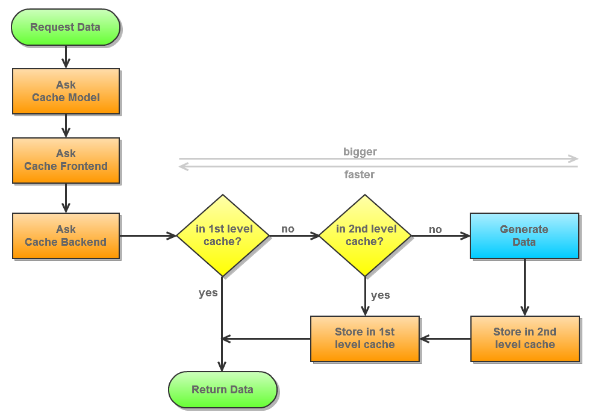
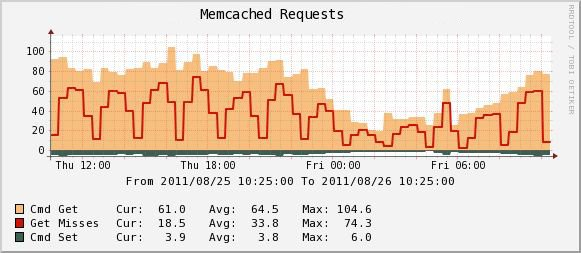
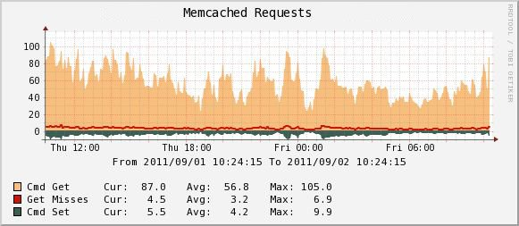

Table of content
- Basics
- Two-Level Caching
- Problem: Priorities
- Problem: First-level cache is not refreshed correctly
- Problem: Hardcoded first-level cache classes
- Related posts
- Further reading
Basics
You might want to read my blog post about caching internals to understand how the different classes are related to each other and what function they have. In addition the ZF's classes, Magento comes with some extra classes (_Varien_CacheCore, _Mage_Core_ModelCache and two cache backend implementations for database caching and eaccelerator). The TwoLevels cache backend is part of ZF.
Two-Level Caching
Two-level caching is widely used in computing. Basically it is about having a small, but fast cache that is used for the first lookup, and if the data cannot be found in the first level it will be looked up in another cache that's usually bigger (mostly unlimited in size), but slower. This gives you both advantages: speed and size. Cache implementations usually have different features like tagging, but going into details would be out of scope for this blog post.
This is how two level caching is supposed to work:

But in ZF's caching implementation there are some things that go wrong making your caches inefficient:
Problem: Priorities
In a two-level cache setup there are some valid reasons why you would like data in the first level to have a shorter lifetime. Maybe because the first-level-cache is much smaller and you don't want to block valuable space with old or rarely used data. Zend Framework has a problem with this:
The TwoLevels cache backend (_Zend_Cache_BackendTwoLevels) implements the interface _Zend_Cache_BackendExtendedInterface. That's a good thing because it allows to use advanced features like priorities. If features are available for a specific backend will be checked using the method "getCapabilities()". Too bad that the TwoLevels cache backend uses the settings from the slow backend for its own settings:
public function getCapabilities()
{
$slowBackendCapabilities = $this->_slowBackend->getCapabilities();
return array(
'automatic_cleaning' => $slowBackendCapabilities['automatic_cleaning'],
'tags' => $slowBackendCapabilities['tags'],
'expired_read' => $slowBackendCapabilities['expired_read'],
'priority' => $slowBackendCapabilities['priority'],
'infinite_lifetime' => $slowBackendCapabilities['infinite_lifetime'],
'get_list' => $slowBackendCapabilities['get_list']
);
}That means if you're using a slow backend that does not support priorities your TwoLevels cache won't neither support this feature. Strange, as priorities are mainly designed for controlling data in a two-level cache setup. ZF's file backend does not support priorities.
Too bad that Zend_Cache_Core's method save() checks for that capability it won't pass the priority parameter if this feature is not defined. Passing the additional parameter wouldn't hurt in any case and would solve some problems.
public function save($data, $id = null, $tags = array(), $specificLifetime = false, $priority = 8)
{
// ...
if (($this->_extendedBackend) && ($this->_backendCapabilities['priority'])) {
$result = $this->_backend->save($data, $id, $tags, $specificLifetime, $priority);
} else {
$result = $this->_backend->save($data, $id, $tags, $specificLifetime);
}
// ...
}Even worse, that the TwoLevels cache implementation actually uses this paramter to calculate the lifetime for the first level cache, even if the capability is not defined. The parameter is preset with "8" which leads to data in the first level cache always having a lifetime that's one third of the original one without having to possibility to influence this. Check "_Zend_Cache_Backend_TwoLevels->getFastLifetime()" for details on the calculations:
private function _getFastLifetime($lifetime, $priority, $maxLifetime = null)
{
if ($lifetime === null) {
// if lifetime is null, we have an infinite lifetime
// we need to use arbitrary lifetimes
$fastLifetime = (int) (2592000 / (11 - $priority));
} else {
$fastLifetime = (int) ($lifetime / (11 - $priority));
}
if (($maxLifetime !== null) && ($maxLifetime >= 0)) {
if ($fastLifetime > $maxLifetime) {
return $maxLifetime;
}
}
return $fastLifetime;
}See section "Problem: First level cached is not refreshed correctly" why this actually is a big problem.
I've created a patch
- that enables the priority setting of the TwoLevels cache regardless of the used backends (because priority usage has nothing to do capabilities of the backends in this case)
- that makes the default priority configurable in Magento. If you don't want to have shorter lifetimes you need to set this parameter to 10. Decreasing this value will shorten the first level cache lifetime. Unless you really know what you want and unless you have the auto_refreshing (see below) fixed you probably want this set to 10 in your Magento instance. For backwards compability reason it defaults to "8" in my patch.
Configuration can be done in the cache section of your local.xml file:
<config>
<global>
<cache>
<backend>apc</backend>
<slow_backend>File</slow_backend>
<auto_refresh_fast_cache>1</auto_refresh_fast_cache>
<prefix>MYSHOP_</prefix>
<default_priority>10</default_priority>
</cache>
</global>
</config>Problem: First-level cache is not refreshed correctly
Zend Framework's TwoLevels cache has a problem with refreshing data in the first level cache. If you always have the same lifetimes for the first level and the second level this is no problem for you, but if you haven't already fixed the bug in the section above the first level lifetime is always one third and won't be refreshed until the data expires in the slow backend. Check the statistics in my previous blog post on this topic and this statistics for some demonstration of the bug resulting in bad cache efficiency:
 First level cache misses after 1/3rd of time
 First level cache hits with priority = 10
There's a simple way around this bug: Enabling auto refreshing. But auto refreshing is buggy aswell. Auto refreshing will rewrite data in the first level cache on every read. Writing usually is much slower and in most cases totally useless. So there is no reason to enable this feature unless your shop is too fast and you want to slow it down intentionally. Besides that it won't be possible the gather hit statistics because all data will be reinserted after each hit resulting the hit count to always be "1". You can see that in apc-info. Hit statistics data might be used be some cache implementation to decide which entries to dismiss on full caches.
The reason this feature probably was created for is to write data back into the first level cache if it was not found there, but found in the second level cache. (That's how two-level caching is supposed to work. See diagram above.). But current auto refresh implementation does not work this way. This was already reported (including a simple patch), but sadly wasn't included to ZF and Magento yet. Applying this patch works fine and will allow you to have firs-level caches with shorter lifetimes that will refresh their data from second level after being expired on next hit. Calculating new lifetimes in this patch is not taken into account. That means if the first level is refreshed shortly before the second level expires data may stay in first level a little longer as expected. But this shouldn't be a big deal and still way better than not using the fast cache at all after its lifetime has expired.
Also check following reported bugs that affect the TwoLevel cache (some of them have been applied to the TwoLevels cache in the meantime, others aren't):
- Zend_Cache_Backend_TwoLevels auto_refresh_fast_cache off and priority lower than 10 causes inconsistencies
- Cache_Backend_TwoLevels: auto_refresh_fast_cache always saves fast backend
- TwoLevels backend doesn't update fast cache if full
- And if you're using APC as first level cache take into account that default behaviour is that it will be completly flushed everytime it fills up completely: Check this blog post on details (in german).
Problem: Hardcoded first-level cache classes
This is actually a Magento Bug and not a ZF bug: You can't use every cache backend as first level cache in a two-level setup. The classes that are available are hardcoded in _Mage_Core_Model_Cache->getBackendOptions().
Only following cache backends are possible (and you cannot extend them to add functionality or fix bugs without touching the original class):
- memcached
- apc
- xcache
- eaccelerator / varien_cache_backend_eaccelerator
Too bad, if you wanted to have your own first-level cache or an improved version of an existing one. You will need to touch this method to enable it. This method and the confusing configuration of the (implicit) two-level setup need some serious refactoring...
Related posts
- Magento Two-Level-Caching
- Magento Automatic Cache Cleaner
- Magento Asynchronous Cache
- Wenn der APC Cache vollläuft
- Magento Advanced Template Hints
- Magento Caching Internals
- Meet Magento #5 2011: Performance durch Caching
Further reading
- Do you have a first-level cache available that is big enough for the complete cache? Then turn off the second-level by setting _slow_backend_storedata in your local.xml: "Speeding up Magento: the burden of Two Level cache"
- Zend Framework documentation on cache backends.
- Still not fed up with caching? Read this article on "Caching in the Distributed Environment"
- Fed up with database cache and two-level caching? Searching for a single, fast cache that supports tags? Check out Vinai's symlink file cache backend or Colin's Redis cache backend!


This website uses disqus for the commenting functionality. In order to protect your privacy comments are disabled by default.
Enable Comments